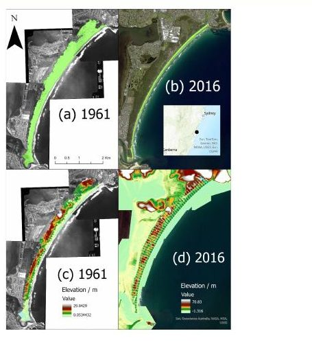
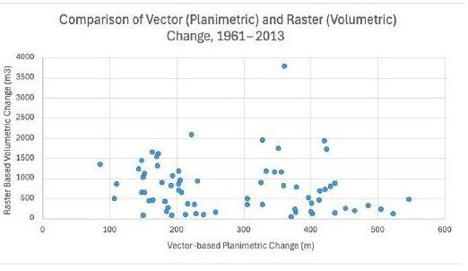

Coastal change · Port Kembla
How much of Perkins Beach's dune system has been lost?
Compared historical aerial photos, photogrammetry spot heights and modern LiDAR along 69 transects to measure how far the dunes have retreated and how much sand has gone.
- 236 m
- mean loss of dune width
- ~750 m³
- mean sand volume lost per transect
- 3,782 m³
- largest loss, at the northern end
Method
Built a 1961 TIN from 2,496 photogrammetry spot heights and a 2013 TIN from 5 m LiDAR. Buffered each transect and ran Polygon Volume on both surfaces, then differenced the volumes in Excel. Measured dune width separately from the 1961 aerial mosaic and 2016 WorldView-2 imagery, and compared the two approaches.
Finding
Central transects narrowed by more than 400 m, with a maximum of 548 m at Transect 61. Width loss and volume loss rose together, but not in a straight line. Transect 12 lost a lot of width and little volume, which came down to digitising choices and DEM interpolation.
Tools
- ArcGIS Pro
- TIN and DEM
- LiDAR
- Photogrammetry
- Excel
Limits
Vegetation lines were hard to digitise on the 1961 photos, and interpolating the 1961 surface smooths small dune features.

